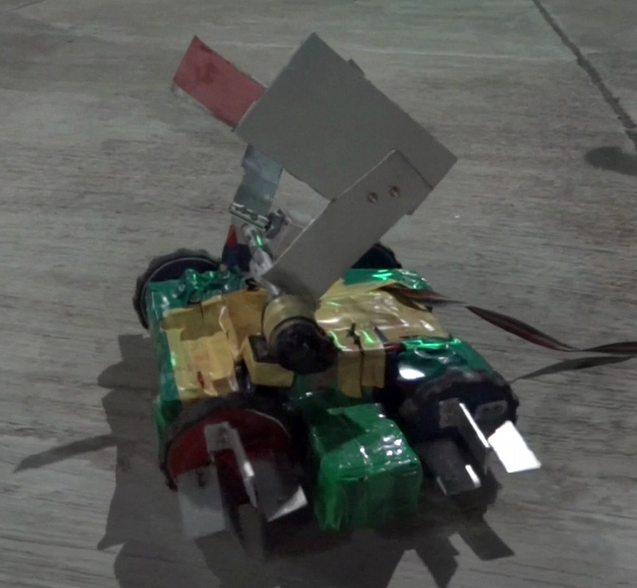

Teaching
Graduate Student Instructor
Control of Aerospace Vehicles (AEROSP 470), University of Michigan (Sep-Dec 2021)
Control of Aerospace Vehicles (AEROSP 470), University of Michigan (Sep-Dec 2021)
- Was responsible to conduct office hours to help students with their doubts related to the concepts taught in the course
- Was responsible to organise discussion sessions to teach and discuss material complimentary to the course material
Graduate Student Instructor
Navigation and Guidance of Aerospace Vehicles (AEROSP 584), University of Michigan (Sep-Dec 2019)
Navigation and Guidance of Aerospace Vehicles (AEROSP 584), University of Michigan (Sep-Dec 2019)
- Was responsible to conduct office hours to help students with their doubts related to the concepts taught in the course
- Was responsible to design some assignments and the final project exam for the course
Teaching Assistant
Experiments in Aerospace Engineering (AE 451A), IIT Kanpur (Jul-Nov 2016)
Experiments in Aerospace Engineering (AE 451A), IIT Kanpur (Jul-Nov 2016)
- Was responsible to teach the fundamentals of an experiment on 'photoelasticity' to the senior undergraduates and to help them perform the experiment
Professional Service
Reviewer for Journal Publications
- IEEE Transactions on Robotics (T-RO)
- Autonomous Robots
- Journal of Aerospace Information Systems (JAIS)
- Nonlinear Dynamics
- Nonlinear Analysis - Hybrid Systems
- IEEE Robotics and Automation Letters (RA-L)
- IEEE Control Systems Letters (L-CSS)
Reviewer for Conference Publications
- Conference on Decision and Control (CDC) [2019, 2020]
- American Control Conference (ACC) [2019, 2020, 2021, 2022]
- International Conference on Robotics and Automation (ICRA) [2019, 2020]
- International Conference on Intelligent Robots and Systems (IROS) [2018, 2021]
- European Control Conference (ECC) [2019, 2020]
- International Conference on Hybrid Systems: Computation and Control (HSCC) [2020]
- SciTech [2020]
Extracurricular Activities
RoboPirates, Techkriti 2014
Annual Technical and Entrepreneurial festival of IIT Kanpur (Mar 2014)
Annual Technical and Entrepreneurial festival of IIT Kanpur (Mar 2014)
- Participated in the robotics competition in which we built an amphibot which could carry additional weight while moving over water as well as on the ground
- The aluminium casing stucture is filled with Polysterene (thermocol) to prevent the robot from sinking into water
- Secured second position in the competition
- For demonstration video please follow the link

ROBOCON 2013
National robotics contest organized by Doordarshan and MIT academy of engineering, Pune (Dec 2012-Mar 2013)
National robotics contest organized by Doordarshan and MIT academy of engineering, Pune (Dec 2012-Mar 2013)
- Was a part of the IITK team which participated in ROBOCON 2013
- Designed and fabricated two robots : one fully autonomous, other manually controlled
- Robots were capable of performing various tasks such as picking and passing cylindrical boxes, throwing specific objects in a controlled manner
ROBOGAMES, Takneek 2012
Inter hostel Technical and Entrepreneurial festival of IIT Kanpur (Sept 2012)
Inter hostel Technical and Entrepreneurial festival of IIT Kanpur (Sept 2012)
- Developed a robot capable of differential detection of multi-colored strips using micro-controller (Atmega8)
- Stood first in the competition